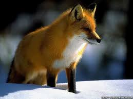

Basic HTML tags
With HTML (Hypertext Markup Language) we can create our own web site.(for example: Nepal College of information Technology )
Introduction
HTML Elements
HTML Attributes
Mathematical and Chemical Formulas
Nepalese prime ministers
Mallals and Birds
Protocols and Standards
Images/ Gallery
Introduction
All HTML documents must start with a type declaration: <!DOCTYPE html>.
The HTML document itself begins with <html> and ends with </html>.
The visible part of the HTML document is between <body> and </body>.
HTML Elements
HTML elements are written with a start tag, with an end tag, with the content in between. However there are some html elements which does not have content. Those types of tags are called empty tags.For example, <br> is an empty tag without a closing tag. Empty elements can be "closed" in the opening tag like this: <br />. HTML5 does not require empty elements to be closed.
HTML Attributes
Attributes provide additional information about HTML element.
- HTML elements can have attributes
- The HTML title attribute provides additional "tool-tip" information
- The HTML href attribute provides address information for links
- The HTML width and height attributes provide size information for images
- The HTML alt attribute provides text for screen readers
- It is better to use lowercase HTML attribute names
- It is better to quote attributes with double quotes
- Attributes provide additional information about an element
- Attributes are always specified in the start tag
- Attributes come in name/value pairs like: name="value"
Some Basic Mathematical and Chemical Formulas
(a+b)2 = a2 + 2ab + b2 (a-b)2 = a2 - 2ab+b2 (a+b)3 = a3 + 3a2b + 3ab2 + b3 (a-b)3 = a3 - 3a2b + 3ab2 - b3
NAOH + HCL→NACL + H2O 2H2 + O2→ 2H2O c6H12O6 + 6O2=6CO2 + 6H2O + Energy
List of Nepalese prime minister of the Federal Democratic Republic of Nepal
- Girija Prasad Koirala(acting)
- Pushpa Kamal Dahal(alias Prachanda)
- Madhav Kumar Nepal
- Jhala Nath Khanal
- Dr. Babu Ram Bhattarai
- Khil Raj Regmi
- Khagda Prasad Oli
List of Mammals and Birds
- Mammals
- Chimpanzee : Genetically, chimps and human beings are about ninety four percent similar. Most of their genetic differences are found in the non-coding region of DNA.
- Dolphin : This lovely creature is extremely adorable to humans for varied reasons. Different researches have revealed that they possess a stupendous intellect and even out-do humans in intelligence.
- Elephants : Elephants are known to be the largest living mammals on earth.
- Panda : The combination of white and black helps these animals camouflage themselves in their snowy and rocky environment.
- Human beings : They belong to the most advanced creatures on the planet Earth who are classified in the family Hominidae of class Mammalia, and are distinguished by their large brain relative to body size which is very well developed.
- Birds
- Peacock
- Dove
- Sparrow
- Pigeon
- Humming Bird
Protocols and Standards
Web browsers communicated with web servers primarily using HTTP (hypertext transferprotocol) to fetch web pages. HTTP allows web browsers to submit information to web servers as well as fetch web pages from them. Pages are identified by means of a URL(uniform resource locater), which is treated as an address, beginning with “http://” for HTTP access.
The file format for a web page is usually HTML (hyper-text markup language) and is identified in the HTTP protocol. Most web browsers also support a variety of additional formats, such as JPEG, PNG, and GIF image formats, and can be extended to support more through the use of plugins. The combination of HTTP content type and URL protocol specification allows web page designers to embed images, animations, video, sound, and streaming media into a web page, or to make them accessible through the web page.
- HTTP ( Hyper Text Transfer Protocol )
- Short for Hyper Text Transfer Protocol, HTTP is a set of standards that allow users of the World Wide Web to exchange information found on web pages. When accessing any web page entering http:// in front of the address tells the browser to communicate over HTTP. For example, the URL for NCIT is http://www.ncit.edu.np. Today's browsers no longer require HTTP in front of the URL since it is the default method of communication. However, it is kept in browsers because of the need to separate protocols such as FTP. It uses port 80 by default for communication.
- FTP ( File Transfer Protocol )
- File Transfer Protocol (FTP) is a standard Internet protocol for transmitting files between computers on the Internet. Like the Hypertext Transfer Protocol (HTTP), which transfers displayable Web pages and related files, and the Simple Mail Transfer Protocol (SMTP), which transfers e-mail, FTP is an application protocol that uses the Internet's TCP/IP protocols. FTP is commonly used to transfer Web page files from their creator to the computer that acts as their server for everyone on the Internet. It's also commonly used to download programs and other files to your computer from other servers.
- SMTP ( Simple Mail Transfer Protocol )
- The SMTP (Simple Mail Transfer Protocol) protocol is used by the Mail Transfer Agent (MTA)
to deliver your eMail to the recipient's mail server. The SMTP protocol can only be used to
send emails, not to receive them. Depending on your network / ISP settings, you may only
be able to use the SMTP protocol under certain conditions.
Images/Gallery
